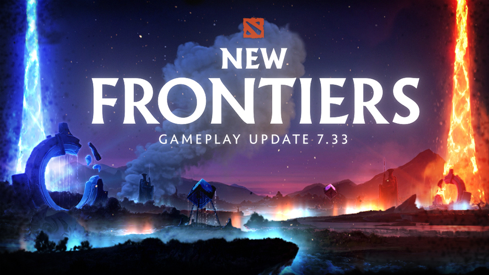

Культові оновлення гри



"Dota 2" - це мультиплеєрна онлайн-гра в жанрі MOBA (Мультиплеєрна онлайн битва арени). Гравці обирають персонажів, відомих як "герої", з унікальними навичками та характеристиками. Гра поділяється на дві команди по п'ять гравців кожна, які протистоять одна одній на великій карті. Мета - знищити фортеці суперників, здобути перевагу та контролювати ключові пункти на карті. "Dota 2" визначається стратегією, спільною грою та вміннями гравців у використанні своїх героїв для перемоги в бою.